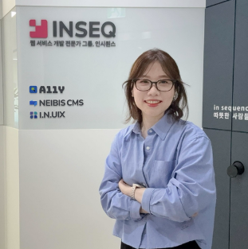

URL · 이미지 · 폴더 · 플랫폼
워드프레스 없어도,
모든 이미지에
접근성 설명을.
URL을 입력하거나, 이미지를 직접 올리거나, 사용하는 플랫폼에 연결하거나. 방식에 상관없이 WCAG 2.2 기준으로 제대로 된 대체 텍스트를 만들어 드립니다.
현재 개발 중입니다. 이메일을 남겨두시면 출시 때 가장 먼저 알려드립니다.
"2024년 연간 분기별 매출 막대 그래프. 1분기 0.8억에서 시작해 2분기 1.4억, 3분기 2.0억, 4분기 3.1억으로 연간 약 4배 성장. 4분기 연속 상승세를 보이며 연말 최고치 기록."
접근 방식
이미지를 가져오는 방식,
무엇이든 됩니다.
워드프레스 플러그인 없이도 앨리의 AI를 그대로 쓸 수 있어요. 이미지를 어떻게 가져올지만 고르면 됩니다.
URL 스캔
사이트 주소만 입력하면 이미지를 자동으로 찾아서 대체 텍스트를 생성합니다. 크롤링부터 생성까지 한번에 처리됩니다.
출시 예정이미지 업로드
JPG, PNG, SVG, WebP 파일을 직접 올리면 즉시 설명을 만들어요. 한 장이든 여러 장이든, 업로드하는 순간 처리됩니다.
출시 예정폴더 업로드
프로젝트 폴더를 통째로 올리면 이미지 전체를 한번에 일괄 처리합니다. 하위 폴더까지 자동으로 탐색합니다.
출시 예정플랫폼 연결
Shopify, Wix, Squarespace 등 주요 CMS에 직접 연결해 이미지를 가져오고, 생성된 설명을 바로 적용합니다. 앨리 API를 통해 연결되며, 별도 설치 없이 API 키 하나로 인증합니다.
출시 예정사용 방법
세 단계로 끝납니다.
방식은 달라도 결과는 같습니다. WCAG 2.2 기준의 제대로 된 대체 텍스트.
이미지를 가져오세요
URL 입력, 파일 업로드, 폴더 드래그, 플랫폼 연결 중 하나를 선택합니다. 앨리가 이미지를 자동으로 감지하고 목록을 만듭니다.
AI가 설명을 생성합니다
WCAG 2.2 기준으로 학습한 AI가 각 이미지를 분석합니다. 표·차트 안의 데이터까지 빠짐없이 텍스트로 변환합니다.
검토 후 내보내세요
생성된 설명을 확인하고 직접 수정할 수 있습니다. CSV, JSON 형식으로 내보내거나 연결된 플랫폼에 바로 적용합니다.
동일한 품질
워드프레스 사용자와
똑같은 AI, 똑같은 기준.
접근 방식이 달라도 핵심은 같습니다. 어떤 방식으로 이미지를 가져오든, 앨리의 AI는 동일하게 작동합니다.
WCAG 2.2 기준
국제 웹 접근성 표준으로 학습된 AI가 설명을 생성합니다. 표·차트 같은 복잡한 이미지도 정보 그대로 전달합니다.
스크린리더 검증
생성된 설명은 실제 스크린리더 환경에서 검증됩니다. 화면을 못 보는 사용자에게 정보가 제대로 들리는지 확인합니다.
변경 이력 기록
어떤 이미지에 어떤 설명을 생성했는지 이력으로 남습니다. 접근성 감사나 시정 요구에 대응할 수 있는 증빙 자료가 됩니다.
누가 만드나요
20년 접근성 전문가가
만든 도구입니다.
앨리는 공공기관·기업 접근성 프로젝트를 20년간 해온 팀이 만듭니다. 빠른 자동 보정보다, 무엇이 왜 문제인지 알고 제대로 고치는 일을 합니다. 연구를 공개하고 결과로 보여드립니다.

"접근성은 체크박스가 아닙니다. 실제 사용자가 페이지를 쓸 수 있느냐의 문제고, 그 시작은 스크린리더가 실제로 무엇을 듣느냐예요."
출시 알림
출시되면 가장 먼저
알려드릴게요.
이메일을 남겨두시면 일반 사용자 버전이 출시될 때 바로 안내해 드립니다. 회원가입 없이 이메일 주소만으로 됩니다.
신청하면 개인정보처리방침에 동의하는 것으로 간주합니다.
자주 묻는 질문